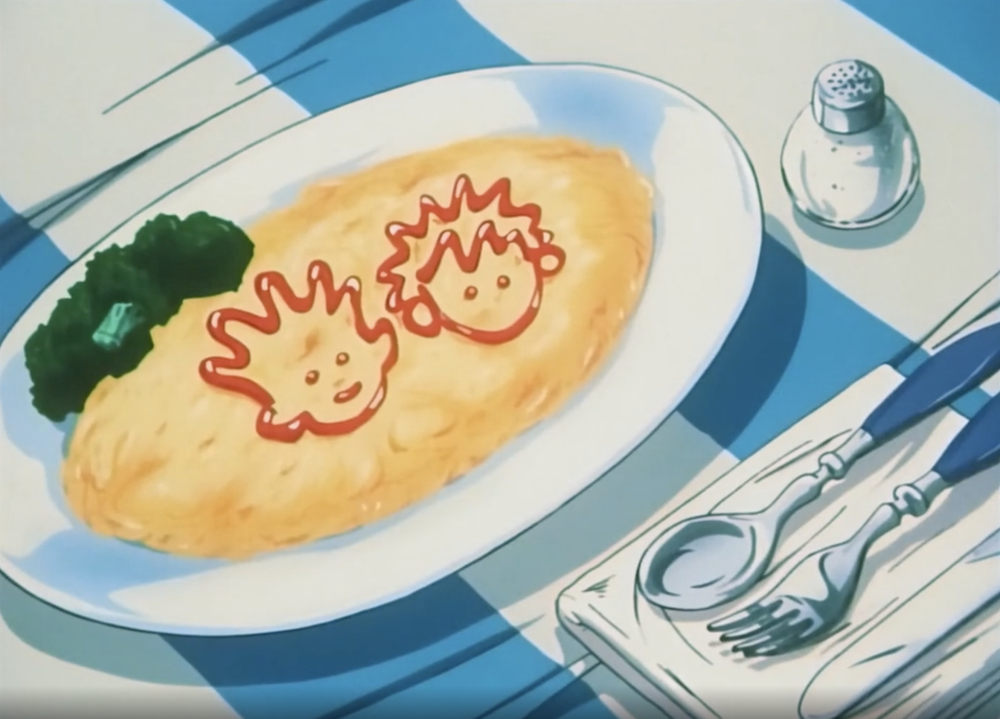

Welcome To My Hunter X Hunter Shrine!!!!!!
i simply do not know how to be normal about this show in real life nor do i know how to be normal about this on the internet. welcome to my favorite tv show of all time. let's BEGIN.

Hunter X Hunter (or hxh) is a manga series written by the man the myth the legend Yoshihiro Togashi. he started writing the series in 1998 and the story is still ongoing! the manga was adapted into an anime series in 1999 and then again in 2011. as i show u my favorite characters you'll see images from both versions, though i like the 1999 art style more.
story
the general plot of the show follows this cute little lad, gon freeccs,  , who's goal is to find his father (a really...... fascinating fella. more on him later) and become a Hunter!!!! his dad left him as a child to go adventure and stuff and gon follows in his footsteps. on the way he meets new friends!!! NEXT: Characters.
, who's goal is to find his father (a really...... fascinating fella. more on him later) and become a Hunter!!!! his dad left him as a child to go adventure and stuff and gon follows in his footsteps. on the way he meets new friends!!! NEXT: Characters.
illumi zoldyck
also spelled irumi or yellmi Zaoldyck
yellmi is my favorite character ever. while i actually did not pay attention to him during my first watch (there have been many... many watches since then) (i think the count is at around 7 watches? i don't actually remember) but the second time i watched this show i was immediately charmed by illumi's strange and off-putting personality.  first thing i'd like to note is his alter-ego, Gittarackur. any guy who decides to present himself to the world looking like THIS
first thing i'd like to note is his alter-ego, Gittarackur. any guy who decides to present himself to the world looking like THIS  is bound to recieve my eternal love. this look is actually pretty painful to achieve, which goes to show how far our guy is willing to go for the bit. also? so incredibly gender. i'll do a section on that later.
is bound to recieve my eternal love. this look is actually pretty painful to achieve, which goes to show how far our guy is willing to go for the bit. also? so incredibly gender. i'll do a section on that later.
a lot of people don't like illumi for many reasons. all of these reasons are wrong therefore i will not acknowledge them. the way togashi wrote his character is absolutely brilliant, one of my favorite things about him is how chatty and talkative he is in his cheerful and light voice which contrasts so starkly against his huge alien-esque soulless eyes and stoic expression it's such a fascinating combo. he is so special.  while growing up on a huge manor in kukuro mountain, illumi is a creature through and through. social skills, materialism, and all that jazz mean nothing to him. Why Mattress When Dirt Soft Too? he's a simple guy with one thing on his mind: his family. i think illumi is very unhealthy about his family and how he loves and protects them and for this i love him.
while growing up on a huge manor in kukuro mountain, illumi is a creature through and through. social skills, materialism, and all that jazz mean nothing to him. Why Mattress When Dirt Soft Too? he's a simple guy with one thing on his mind: his family. i think illumi is very unhealthy about his family and how he loves and protects them and for this i love him.
the main way this is shown is through the way he talks to his younger brother killua  and hier to the zoldyck throne(?).
and hier to the zoldyck throne(?).
being the Eldest, yellmi raised killua with his bare hands for the sake of his family. illumi's main goal is to make sure killua suceeds in fulfilling his role in the family, not taking the time to consider anything else killua might want because in illumi's pov, nothing matters more than family. i'm sure this sentiment is something a lot of us with Familly Issues grapple with often. he's overbearing and controlling and is genuinely shocked to find out killua might like someone else (gon) more than his own brother?? which i found so amusing and so telling of How His Mind Works.
for the sake of his family. illumi's main goal is to make sure killua suceeds in fulfilling his role in the family, not taking the time to consider anything else killua might want because in illumi's pov, nothing matters more than family. i'm sure this sentiment is something a lot of us with Familly Issues grapple with often. he's overbearing and controlling and is genuinely shocked to find out killua might like someone else (gon) more than his own brother?? which i found so amusing and so telling of How His Mind Works.
i think a major reason why illumi is so hung up on this idea that he cant have friends (does he really know what friendship truly is? i dont think so considering his actual friendship with hisoka he doesn't seem to recognize as such) is because of his main priority towards his family. perhaps its because he was denied the Hier title despite being the oldest child so he serves his family to make up for it? but i also think this may not be true since the zoldycks subvert so many other Standards and Norms who's to say they don't always deem the eldest the Heir.
anyways, another point i want to make before i move on is the whole nen needle manipulation he put in killua that made him run away whenever he faced an overwhelming opponent.  while obviously understanding the fact that this needle has tortured baby killu for years and totally messed up his ideas about his own self worth and purpose in life, i also wanted to explore this dynamic as a way of yellmi allowing his brother some freedom (sort of in the same way silva "allows" him to adventure knowing well he will be manipulated back into the Family Business) while still protecting him from harm when illumi is not nearby to save him which is truly messed up but also... so in line with illumi's thinking? i mean in his perspective he actually came up with a genius automated babysitter. the needle scared killua enough to flee from anyone stronger than he is, both sharpening his assassin skillz or whatever but also pretty mych guarenteeing his safety??? illumi you are so big brained for this. life360 but better (but actually worse). i remember bringing this up to a friend for the first time because i didn't realize no one else read that situation this way and she validated my illumi thinking.
while obviously understanding the fact that this needle has tortured baby killu for years and totally messed up his ideas about his own self worth and purpose in life, i also wanted to explore this dynamic as a way of yellmi allowing his brother some freedom (sort of in the same way silva "allows" him to adventure knowing well he will be manipulated back into the Family Business) while still protecting him from harm when illumi is not nearby to save him which is truly messed up but also... so in line with illumi's thinking? i mean in his perspective he actually came up with a genius automated babysitter. the needle scared killua enough to flee from anyone stronger than he is, both sharpening his assassin skillz or whatever but also pretty mych guarenteeing his safety??? illumi you are so big brained for this. life360 but better (but actually worse). i remember bringing this up to a friend for the first time because i didn't realize no one else read that situation this way and she validated my illumi thinking.
inappropriate emotional responses and codependency issues aside, i do want to emphasize yellmi's fun silly and goofy traits because they are Important. would you want someone judging your entire character based on how you act during your times of distress? i didn't think so! my all-time favorite illumi is from the hxh musical. an incredbily silly and unserious lad. the most memorable example is this iconic dancing scene because he totally did Not need to do that. but he did. he decided of his own free will to do a little dancy dance before freeing his family from hisoka's strings!!!!!! a free spirit indeed.
silly and goofy traits because they are Important. would you want someone judging your entire character based on how you act during your times of distress? i didn't think so! my all-time favorite illumi is from the hxh musical. an incredbily silly and unserious lad. the most memorable example is this iconic dancing scene because he totally did Not need to do that. but he did. he decided of his own free will to do a little dancy dance before freeing his family from hisoka's strings!!!!!! a free spirit indeed.


assigned natal chart placements: capricorn ☼, virgo ☾, aquarius ⬆
assigned pokemon: ditto (shapeshifting) mimikyu also.
music taste: he doesn't listen to music. just got static in his head

more characters!
gon & killua
ヽ( ⌒ω⌒)人(=^‥^= )ﾉ
introducing... the main characters! our little babies ☆

{kind=link}
killua and gon are one of my favorite tv friendships ever portrayed in media. inseperable since the day they met, these two stole my heart! nobody is immune to gon's charm, not even killua. i love how hopeful gon is despite battling demons no 14 year old boy should battle, and while some might call him naive, i don't see it that way. it might be easy to deem gon one dimensional but i don't think being optimistic and caring are bad traits to have, especially when you're besties with a little guy as tortured and conflicted as killua. to me, they seem to balance each other out perfectly.
their relationship is definetly most defined by killua's perspective, as we see a lot of this in togashi's writing. to killua, gon is friendship (friendship being the one thing his family pressures him to be rid of). he is the light that contrasts the darkness he has been told he embodies throughout his entire life. i think this binary (?idk what word i'm trying to use here) between gon and his family is what makes killua hold onto their friendship so dearly. they love each other so much! they mean so much to each other! they are my sweet little adorable babies!
they love each other so much! they mean so much to each other! they are my sweet little adorable babies!
 my favorite part about their relationship is actually the complications that arise in the chimera ant arc. this arc really cemented my thoughts on their friendship and love in a lot of ways (the rom-com structured date with palm episode says so much about the meaning of friendship, how much killu really loves gon, and also just how sweet gon can be to people who don't really know what love is). i think its soo important to explore their complicated friendship!! and how it was actually so Good for them to part ways after the election arc.
my favorite part about their relationship is actually the complications that arise in the chimera ant arc. this arc really cemented my thoughts on their friendship and love in a lot of ways (the rom-com structured date with palm episode says so much about the meaning of friendship, how much killu really loves gon, and also just how sweet gon can be to people who don't really know what love is). i think its soo important to explore their complicated friendship!! and how it was actually so Good for them to part ways after the election arc.
now i'm no psychiatrist, but i can identify codependency when i see it ♡ which is so real. have you truly Lived Life without at  least ONE codependent friendship? the answer is no. i thkn after so much time spent together and all the adventures and trials and tribulations and epic highs and lows of high school football they've faced together, going their own ways was truly the best thing for them. with killua now reuniting with his little sister and being the only one who can protect her (which is actually another huge stressor on killua my baby let him rest. but i digress)
least ONE codependent friendship? the answer is no. i thkn after so much time spent together and all the adventures and trials and tribulations and epic highs and lows of high school football they've faced together, going their own ways was truly the best thing for them. with killua now reuniting with his little sister and being the only one who can protect her (which is actually another huge stressor on killua my baby let him rest. but i digress)  and gon going off to meet his father, it feels like they've reached a point where they have learned as much as they could from each other and are more equipped now to be able to grow independently. since the series isn't over yet i still have hope they'll meet again in the future because i don't think their friendship could ever die no matter how long they're apart. i think its very Good for them to go on their own jounreys and explore who they are outside of each other.
and gon going off to meet his father, it feels like they've reached a point where they have learned as much as they could from each other and are more equipped now to be able to grow independently. since the series isn't over yet i still have hope they'll meet again in the future because i don't think their friendship could ever die no matter how long they're apart. i think its very Good for them to go on their own jounreys and explore who they are outside of each other.
killugon is such a beautiful representation of what friendship means and what it looks like and how it can develop. they are wholesome! they are complex! they are light! they are love!

also spelled Kurapica or Kurapika


ah, let us say hello to my second favorite aries ever (first favorite aries would be me). kurapika, the last survivng member (that we know of) of the massacred kurta clan.